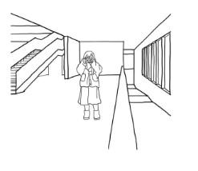
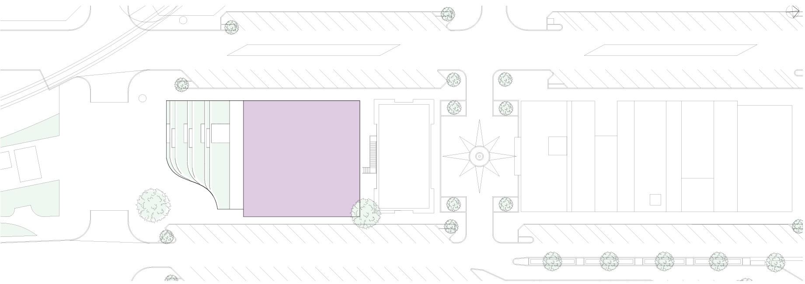
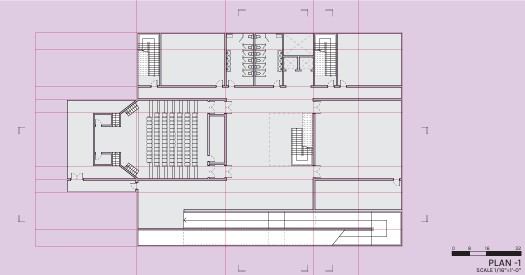
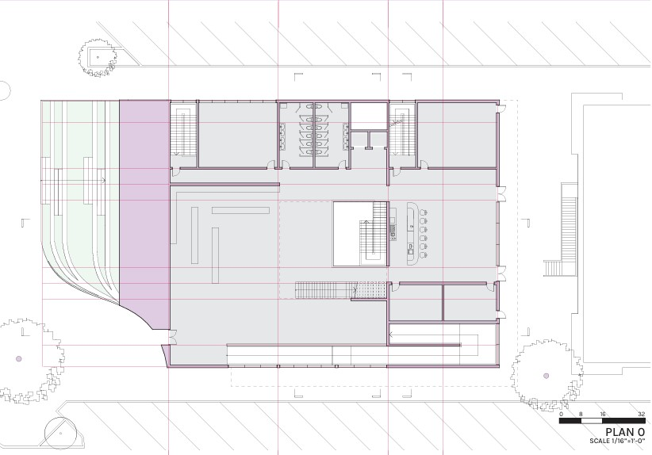
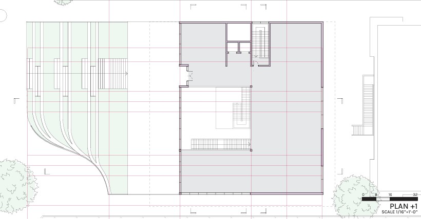
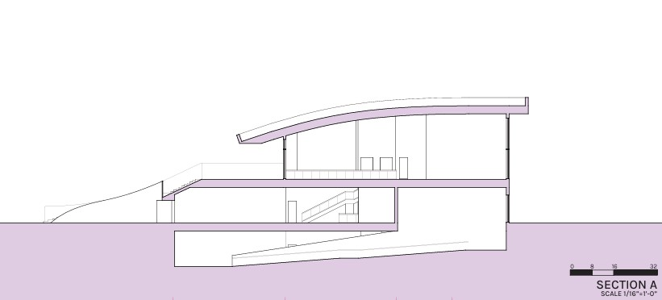
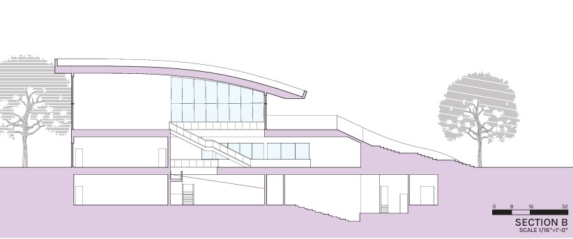
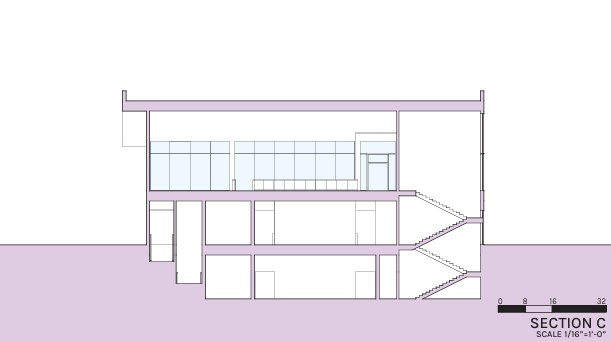
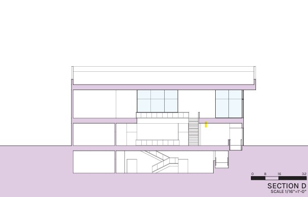
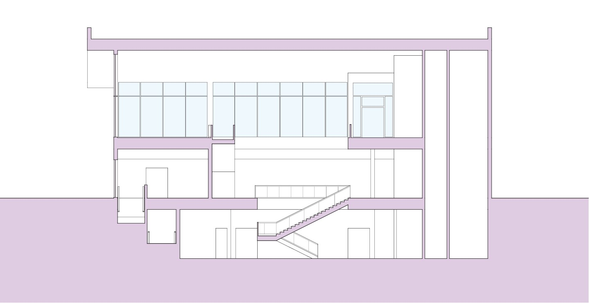

A dynamic hub for arts, culture, and community engagement in Downtown Bryan.
Strategically located between the Howell Building and Gloria Stephan Sale Park, the Bryan Cultural Center emphasizes strong pedestrian connections and integrated public spaces. The program centers on a 100-seat sloped-floor auditorium for lectures and performances, with flexible exhibition and workshop areas that remain publicly accessible beyond standard hours while ensuring security.
The design blends with its urban context and enriches the city’s cultural landscape through open, adaptable interiors and clear site relationships, creating a vibrant gathering place that supports everyday community exchange and special events.

Site massing study illustrating street edge, park interface, and daylight strategy.

The site plan organizes entries along pedestrian flows, aligning public rooms to the park and retail context. Sections and elevations calibrate openings for daylight and views while protecting interior gallery conditions.



Case studies and site analysis informed circulation, facade rhythm, and program stacking. The auditorium anchors the public zone; flexible galleries and workshops flank the main spine to support daytime classes and evening events.





“A community living room-open, adaptable, and connected to the city’s cultural fabric.”
© 2025 Leslie Lisuly Contreras Mendoza. All rights reserved.